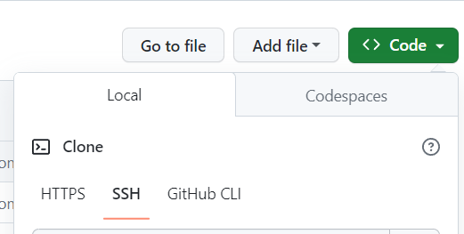
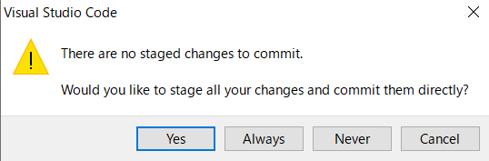

Githubを設定した話 231010
こんな人におすすめ
- wsl2 x vscode x github 使ってみたい人
- githubにsshで接続したい人
- githubに公開してあるレポジトリをクローンしてローカルで編集したものを反映させたい人
コピーボタンとか作ってないです．すみません．
やったこと
- wsl2 x vscode x github 使ってみたい人
- githubにsshで接続したい人
- githubに公開してあるレポジトリをクローンしてローカルで編集したものを反映させたい人
コピーボタンとか作ってないです．すみません．
~$ mkdir ./ssh
~$ cd ./ssh
~$ ssh-keygen -t rsa
~$ clip.exe < ~/.ssh/id_rsa.pub
- github開く
- SSH and GPG keys > SSH keys > Add new SSH Key
- Title設定，コピーしたものをKeyに貼り付け
~$ ssh -T git@github.com
...
Hi oct0pus8winner! You've successfully authenticated, but GitHub does not provide shell access.
- 後半の文字列は無視して大丈夫
~$ git config --global user.email "you@example.com"
~$ git config --global user.name "Your Name"
- githubのクローンしたいレポジトリを開く
- Code>SSH
- urlをコピー
~$ git clone (copied url)
- ファイルを追加
~$ git add ./page002_github-tutorial.html
~$ git commit -m "new page created"
...
1 file changed, 0 insertions(+), 0 deletions(-)
...
~$ git push -u origin
作業ログ
きっかけ
なんで今更これを書こうかと思ったかといいますと，Windows PC を新しくしたので，何度目かのセットアップの機会がありました．毎度忘れてて調べながらやってるので，どうせ最初からやるなら，なにか成果物を作って記憶に定着しやすくなるようにしよう，というところから始まりました．
私の技術力はといいますと，お恥ずかしい話何度かgitを使おうとしたのですが，例えばクローンして改修したレポジトリがコマンドのミス（結構ヤバイことやりました）で全部消えたり，sshに失敗して萎えたり，チームで開発した経験がなかったり，そもそも研究以外でほとんどプログラムを書かなかったりとバージョン管理と縁遠い（本当はめちゃくちゃ大事なのに）生活を送っていました．
情報科学研究科なのか本当にとツッコまれても言い返せないレベルです．学部生のころに勝ったGitHub実践入門も，今ではホコリを被っていました．本当に恥ずかしいです．．．
今回は，windowsを新しくセットアップするにあたって，せっかくホームページでブログ書こうと決めたので，作業ログを書くことにしました．sshコマンドとか，なんとなく使っていたものもこの機会に調べてみようと思い，取り組みました．見ていっていただけますと幸いです．
アカウントは作っておいてください．（省略）参考にした書籍，記事は末尾にあります．ゆっくり見ていってね．
SSH KEY
まずは，githubのリポジトリにアクセスするためにSSH(Secure Shell)プロトコルを使いたいので，公開鍵を作りたいと思います．
書き終わった後に調べたんですが，公式はhttpsの方が推奨されてるのかもです．なんならデフォルトです．昔読みながら動かしてた時に，"GithubではSSHを使って接続します！"と書いてあったのと，sshの方がhttpsよりセキュリティ対策として安全なのかなという思い込みで，ターミナルから使うときはsshを使うもんなんだなぁと思い込んでしまってました．ghについては，1ミリも知らないです．ghを使った方がsshより簡単とかなんとか．機会があれば勉強します．
鍵の生成には，ssh-keygenというコマンドを使います．いつも調べてコピペして使っているssh-keygenですが，名前からして，sshの鍵を作るやつなんだな，とはわかりますが，いつも使ってるオプションって一体なんなんだろうと思い，manコマンドを使って確認しました．-tオプションについての記述は次の通りです．
-t dsa | ecdsa | ecdsa-sk | ed25519 | ed25519-sk | rsa
Specifies the type of key to create. The possible values are “dsa”, “ecdsa”, “ecdsa-sk”, “ed25519”, “ed25519-sk”, or “rsa”.
This flag may also be used to specify the desired signature type when signing certificates using an RSA CA key. The available RSA signature variants
are “ssh-rsa” (SHA1 signatures, not recommended), “rsa-sha2-256”, and “rsa-sha2-512” (the default).
ed25519ってなんじゃい，習ってないです．．． "man ssh-keygen"とかで調べても結構古いサイトが多くヒットし ecdsa等の暗号化アルゴリズムについての解説がないことが多いです． ssh github等で調べると
~$ ssh-keygen -t rsa
と書いてあるものが多いのですが（今回は私もとりあえずこれでやりました），最近のqiitaの記事を見ると
~$ ssh-keygen -t ed25519
というのがちょいちょいあって，気になりました．調査．
ed25519とはedと25519の組み合わせであり，前者はEdDSAという署名方式の一種で，そのあとについている数字は暗号生成に利用している楕円曲線の名前に由来しているそうです．
暗号化の具体的な実装については今は関心がないので，今後気になったときに調べたいと思います，参考になりそうな比較したものを末尾に載せておきます．
それでは本題に戻ります．sshの鍵を生成します．この際ホームディレクトリで作業を行うのがいいかもです．次のコマンドを実行します
~$ mkdir ~/.ssh
~$ cd ~./.ssh
~/.ssh$ ssh-keygen -t rsa
三回入力を求められますが， パスフレーズは認証に使うので覚えておいてください． （セキュリティの観点から見ていいのかどうかはさておき，Enterキー連打でも大丈夫です）
生成した公開鍵をgithubに登録します.ブラウザからgithubにログインし，設定からSSH and GPG keysのページを開き，鍵を登録します．
title
は自分がどこから接続しているのかわかるように，Keyのところには生成したキーを入れてください．wsl2で実行しているため，terminal上にclipコマンドは存在しませんが，clip.exeにwsl2が自動でパスを通してくれているとのことで（今回初めて知りました）次のコマンドでコピーして貼り付けます．記事に意外と書いてくれてないですよね．どこにあるか気になる人はwhichコマンド使ったりして調べてください．
~$ clip.exe < ~/.ssh/id_rsa.pub
登録したら再度ターミナルを開いて接続のテストします．よく見るコマンドですね．
~$ ssh -T git@github.com
The authenticity of host 'github.com (20.27.177.113)' can't be established.
ED25519 key fingerprint is (original fingerprint).
This key is not known by any other names
Are you sure you want to continue connecting (yes/no/[fingerprint])? yes
Warning: Permanently added 'github.com' (ED25519) to the list of known hosts.
Hi oct0pus8winner! You've successfully authenticated, but GitHub does not provide shell access.
Hiってでてるからできたな，メールも届いたしオッケー，と思いきやなんかちょっと怒られてます．githubのアカウントをターミナルに登録した覚えがないからですね．
~$ git config --global user.email "you@example.com"
~$ git config --global user.name "Your Name"
ここで急にsshコマンドのTオプションってなんなんだろうと思い調べました．
-T Disable pseudo-terminal allocation.
シンプルですね．
リモートレポジトリにアクセス
以後レポジトリを作ってある前提で話を進めるので，まだ作ってないヨという人は手を止めて作ってみてください．
作成したレポジトリ(Repositories)をクローン(Clone)します．電気羊ですね．GithubのページからCode>local>sshで出てくるURLをコピーします．なんか見切れてましたがこの画像の下にでてくるのURL部分を．コピーして使います．
続いてターミナルに戻り，複製したい場所に移動して
~$ git clone (copied url)
で終わりです．適当にファイルを作って，レポジトリを更新してみます．よくあるadd,commit, pushのやつです．
~$ git add ./page002_github-tutorial.html
~$ git commit -m "new page created"
[main fd47566] new page created
1 file changed, 0 insertions(+), 0 deletions(-)
create mode 100644 page002_github-tutorial.html
ちなみにgithubのアカウント登録してないと怒られます．
Author identity unknown
*** Please tell me who you are.
Run
git config --global user.email "you@example.com"
git config --global user.name "Your Name"
to set your account's default identity.
Omit --global to set the identity only in this repository.
fatal: empty ident name (for hostname) not allowed
ステージしてコミットしたので，最後にプッシュしてレポジトリを更新します
$ git push -u origin
Enumerating objects: 4, done.
Counting objects: 100% (4/4), done.
Delta compression using up to 16 threads
Compressing objects: 100% (2/2), done.
Writing objects: 100% (3/3), 302 bytes | 302.00 KiB/s, done.
Total 3 (delta 1), reused 0 (delta 0), pack-reused 0
remote: Resolving deltas: 100% (1/1), completed with 1 local object.
To github.com:oct0pus8winner/MyProfile.git
6b47c9c..fd47566 main -> main
Branch 'main' set up to track remote branch 'main' from 'origin'.
-u originのオプションをつけることで，次回からはgit pushで更新できるそうです．一人で使う分にはこれでいいかも．
VS CodeのGUIでプッシュしてみる
どのExtensionを使っているのか忘れましたが，いつぞやのアップデートでGitHub Extensionがvscodeに内臓されるようになった（らしい）ので，多分vscodeにgithubアカウントでログインしていれば使えると思います．
左側のアイコン一覧の枝分かれしているマーク，Source Controlを選択し，コミットしてみます．Commit & Pushっていうのがあるんですね，楽ちんじゃん．
怒られました，ステージにaddしてないですからね．でもこれでYesを選択するとまとめてやってくれました．感謝感謝．
github上で確認．
できました．
最後に
情報科学研究科の大学院生なのでGitHubくらい使えて当たり前ですよね．何を今更やってんのっていう感じですが，同じように困っている人の助けになると嬉しいです．ブランチとか適当にやってるので，バージョン管理の利点が5割減な気がしますね．なんで今まで触らなかったんですかね，情報系で希少種かもしれないです．
書いてる内容のレベルはともかく，こうやって記事書くのおもしろいですね．調べるとあれもこれも気になってキリがないですね．執筆時間はだいたい1.5hぐらいです．プロ驚き屋目指して頑張ります．
掲載しているコードについて，自分の知識不足でたぶんすごく見にくいと思います．今はちょっと手がさけそうにないので，今後コード乗っけるときは改善したいなと思います．